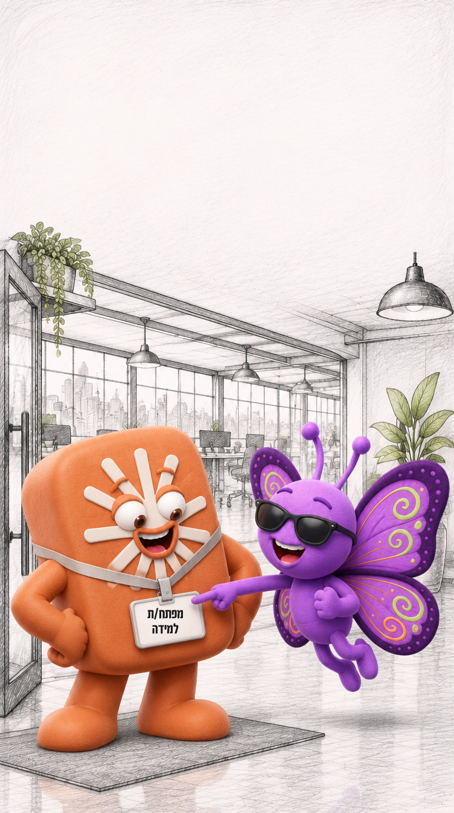
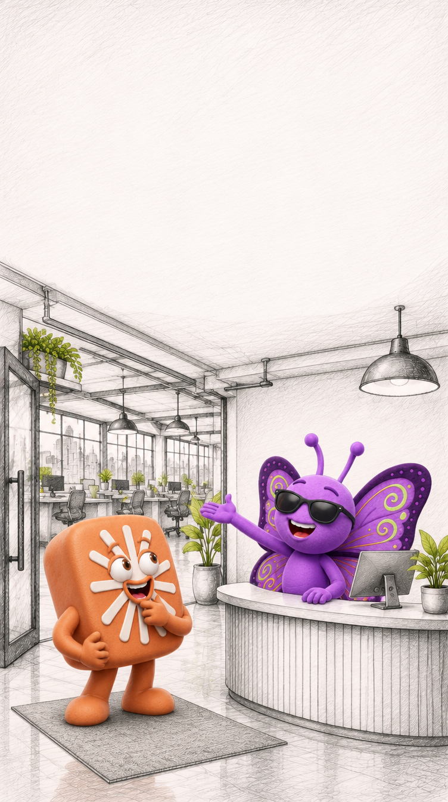
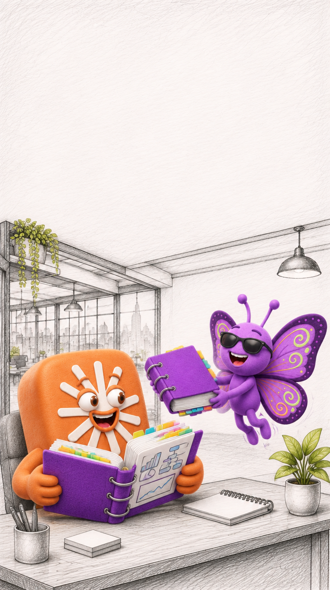
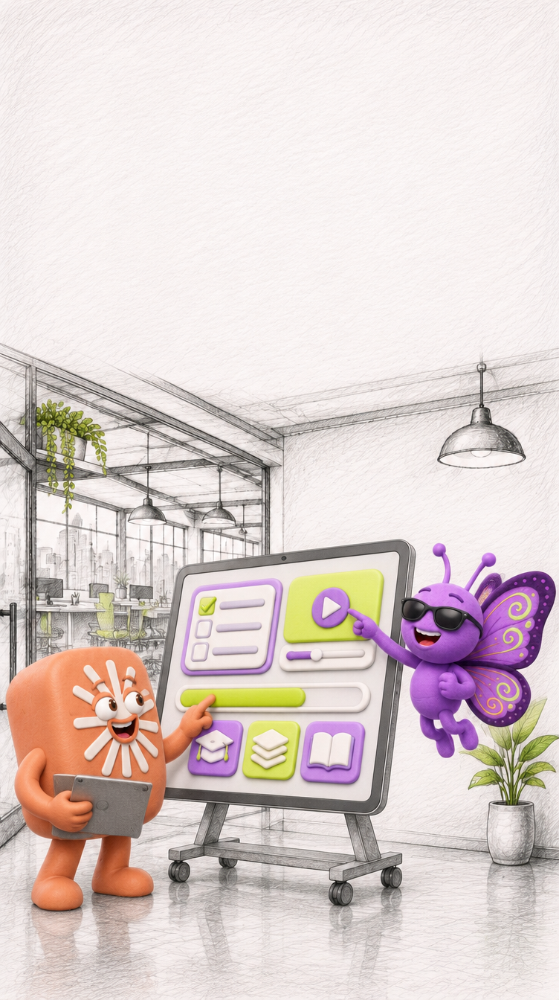
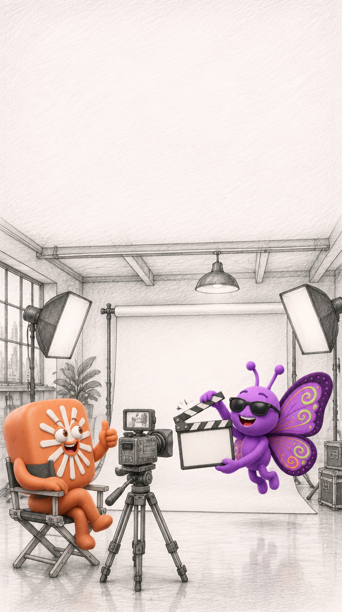
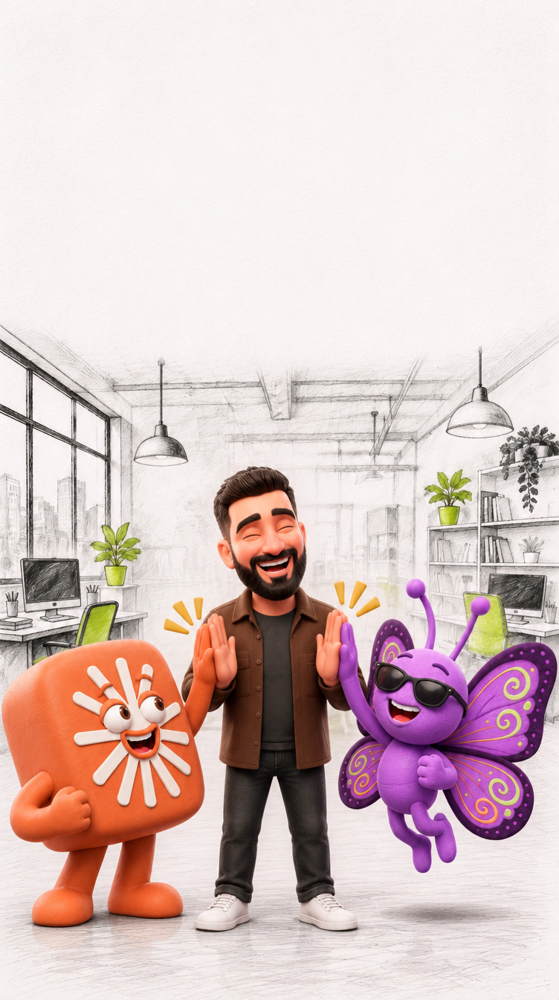

Claude, השותף לעבודה
החדש שלכם
החדש שלכם

סדנה בת ארבעה מפגשים:
ללמוד לעבוד יחד
עם Claude
ללמוד לעבוד יחד
עם Claude

מפגש 1
מי זה Claude? היכרות,
סביבות עבודה ומודלים
מי זה Claude? היכרות,
סביבות עבודה ומודלים

מפגש 2
Skills: מלמדים את Claude
את שיטת העבודה שלכם
Skills: מלמדים את Claude
את שיטת העבודה שלכם

מפגש 3
Claude כמפיק: לומדה
בשיטת vibe coding
Claude כמפיק: לומדה
בשיטת vibe coding

מפגש 4
Claude בהפקות וידאו:
יום באולפן
Claude בהפקות וידאו:
יום באולפן

עם שחר עזר
Gada-Lnet
Gada-Lnet
לפרטים נוספים:
קישור בפוסט
קישור בפוסט